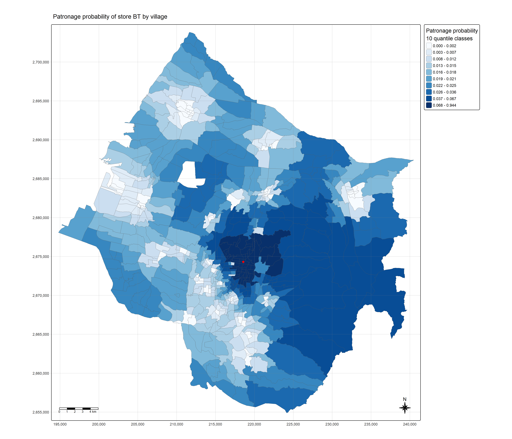
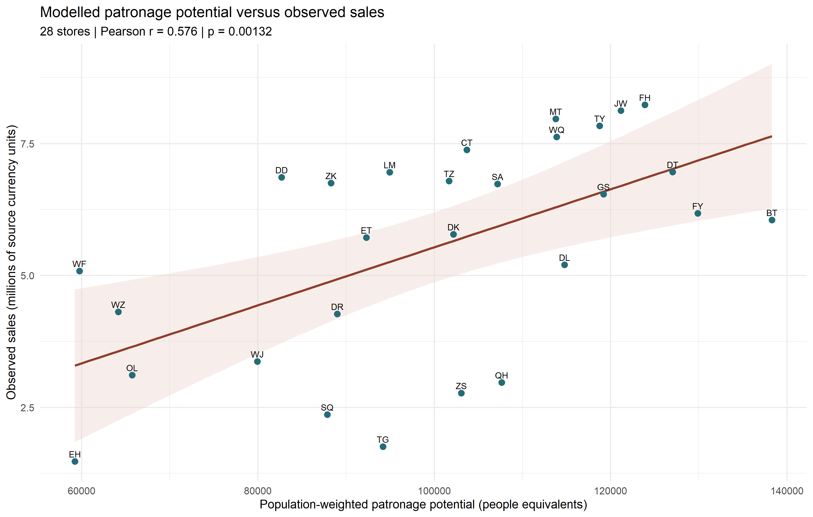
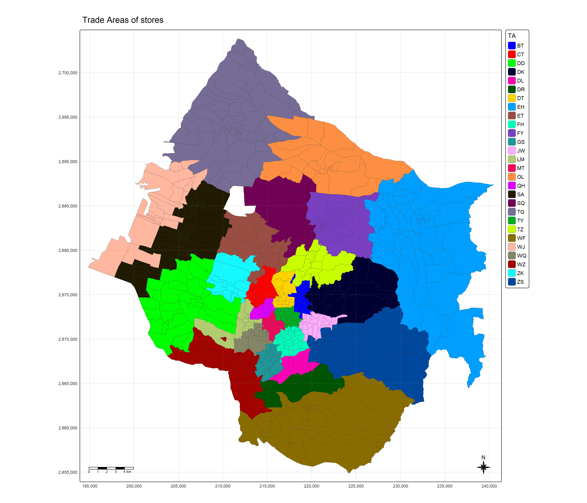

library(sf)
library(dplyr)
library(tidyr)
library(readr)
library(MCI)
library(tmap)
library(ggplot2)
tmap_mode("plot")inclass8
Huff model: village-level trade areas in Taichung
This exercise follows Chapter 18: Market Area Analysis using the Huff model and extends it to the Trade Areas of stores map shown in class. The final map retains 617 village polygons and all 28 store codes in its right-hand TA legend. Each colour identifies a store; the map preserves boundaries between villages assigned to the same store.
Jump to the 28-category map · Full-resolution map · Analysis script · Download data script · Verification script · GitHub
Note
The two legends answer different questions. The BT probability map has 10 quantile classes, following the chapter. The all-store trade-area map has 28 categorical entries, one per store, matching the detail requested from the classroom photographs.
1 Data and reproducibility
The inputs are the chapter’s STORES_TC, TOWN_TC, VILLAGE_TC, pop2019.csv and Store_sales_data.csv. The chapter describes Taichung, and the code uses the _TC layers; the overview’s _TN names are inconsistent with those imports. All calculations here use EPSG:3826, with distances in metres.
The author’s source repository excludes the raw data. I obtained the named inputs from a public teaching-data mirror pinned to a fixed revision. Its counts and distance range are checked against the chapter. The mirror supplies data only; the analysis below is independently implemented. See data provenance and input checksums. Raw files are kept locally.
From the project root, run:
source("inclass8/R/download-data.R")
source("inclass8/R/analysis.R")
source("inclass8/R/verify.R")Render the page with quarto render inclass8/index.qmd. Install any missing packages from CRAN before running; the scripts do not silently install packages.
2 Import and prepare the data
2.1 Import and verify coordinate systems
raw <- "inclass8/data/raw"
stores <- st_read(file.path(raw, "geospatial/STORES_TC.shp"), quiet = TRUE)
town <- st_read(file.path(raw, "geospatial/TOWN_TC.shp"), quiet = TRUE)
village_all <- st_read(file.path(raw, "geospatial/VILLAGE_TC.shp"), quiet = TRUE)
pop2019 <- read_csv(file.path(raw, "aspatial/pop2019.csv"),
col_types = cols(.default = col_guess(), V_ID = col_character()))
store_sales <- read_csv(file.path(raw, "aspatial/Store_sales_data.csv"),
show_col_types = FALSE)
stopifnot(st_crs(stores)$epsg == 3826, st_crs(town) == st_crs(stores),
st_crs(village_all) == st_crs(stores), all(st_is_valid(village_all)),
!anyDuplicated(pop2019$V_ID))2.2 Join store sales and population
Store sales are aggregated by store code and joined to the 28 mapped stores. As in Chapter 18, every store receives an illustrative Store_size = 100. This is an equal-attractiveness assumption, not an observed floor-area measurement.
Population IDs contain a hyphen, whereas the boundary codes do not. After normalising IDs, I retain matched population records and export both sides of the unmatched join for inspection.
store_sales_aggre <- store_sales %>%
group_by(`Store Code`) %>%
summarise(Total_Bill = sum(Bills, na.rm = TRUE),
Total_Sales = sum(Amount, na.rm = TRUE), .groups = "drop")
stores <- stores %>%
left_join(store_sales_aggre, by = c("Store_CD" = "Store Code")) %>%
mutate(Store_size = 100)
pop2019 <- pop2019 %>% mutate(V_ID = gsub("-", "", V_ID, fixed = TRUE))
village_joined <- village_all %>%
left_join(pop2019, by = c("VILLCODE" = "V_ID"))
excluded_villages <- village_joined %>% filter(is.na(P_CNT)) %>%
st_drop_geometry() %>% select(VILLCODE, TOWNNAME, VILLNAME)
unmatched_population <- anti_join(pop2019, st_drop_geometry(village_all),
by = c("V_ID" = "VILLCODE"))
village <- village_joined %>% filter(!is.na(P_CNT))
stopifnot(!anyNA(stores$Total_Sales), all(village$P_CNT > 0),
!anyNA(village[c("H_CNT", "M_CNT", "F_CNT")]))knitr::kable(data.frame(
Input = c("Store points", "Town polygons", "Village polygons before join",
"Population rows", "Villages retained", "Villages without population",
"Population rows without geometry"),
Records = c(nrow(stores), nrow(town), nrow(village_all), nrow(pop2019),
nrow(village), nrow(excluded_villages), nrow(unmatched_population))))| Input | Records |
|---|---|
| Store points | 28 |
| Town polygons | 28 |
| Village polygons before join | 622 |
| Population rows | 625 |
| Villages retained | 617 |
| Villages without population | 5 |
| Population rows without geometry | 8 |
knitr::kable(excluded_villages, caption = "Five excluded boundary records (special S codes)")| VILLCODE | TOWNNAME | VILLNAME |
|---|---|---|
| 66000120S01 | 清水區 | NA |
| 66000120S02 | 清水區 | NA |
| 66000140S01 | 梧棲區 | NA |
| 66000250S01 | 龍井區 | NA |
| 66000120S03 | 清水區 | NA |
The retained population totals 2,804,359. The five unmatched boundary records remain unmodelled. Their missing population is not replaced with zero. Eight population rows without a corresponding polygon also fall outside the retained analysis. Download the excluded boundaries and unmatched population rows.
3 Distance and interaction matrices
st_point_on_surface() provides a point inside each village. Although the chapter’s surrounding text calls these centroids, these are interior representative points. I apply the function to geometry alone, then preserve the village IDs explicitly.
# Work on the geometry alone to avoid assuming attributes are spatially constant.
# This is an interior representative point, not a geometric centroid.
village_center <- st_point_on_surface(st_geometry(village))
distmat <- st_distance(village_center, stores)
rownames(distmat) <- village$VILLCODE
colnames(distmat) <- stores$Store_CD
distmat_long <- as.data.frame(unclass(units::drop_units(distmat))) %>%
tibble::rownames_to_column("VILLCODE") %>%
pivot_longer(-VILLCODE, names_to = "Store_CD", values_to = "distance")
stopifnot(all(is.finite(distmat_long$distance)), all(distmat_long$distance > 0))
interaction_matrix <- distmat_long %>%
left_join(st_drop_geometry(stores) %>% select(Store_CD, Store_size),
by = "Store_CD") %>% select(VILLCODE, Store_CD, Store_size, distance) %>%
as.data.frame()The matrix contains 617 × 28 = 17,276 village–store pairs. Distances range from 108.5 m to 41,395.4 m, matching the chapter’s reported range. These are planar straight-line distances, not road travel distances or times. Zero or non-finite distances cause execution to stop before the inverse-distance model.
knitr::kable(head(interaction_matrix, 6), digits = 2)| VILLCODE | Store_CD | Store_size | distance |
|---|---|---|---|
| 66000110029 | TY | 100 | 28066.50 |
| 66000110029 | DL | 100 | 34344.78 |
| 66000110029 | BT | 100 | 27046.41 |
| 66000110029 | JW | 100 | 30238.55 |
| 66000110029 | DD | 100 | 25079.79 |
| 66000110029 | LM | 100 | 28208.23 |
4 Huff patronage probabilities
For village \(i\) and store \(j\), the model is
\[ P_{ij}=\frac{A_j^{\gamma}d_{ij}^{\lambda}} {\sum_{k=1}^{28}A_k^{\gamma}d_{ik}^{\lambda}}, \qquad A_j=100,\quad\gamma=1,\quad\lambda=-2. \]
These are the explicit power-model defaults used by MCI::huff.shares(). Attraction is equal across stores; distance therefore determines relative patronage probabilities. All 28 stores compete for each origin, and each origin’s probabilities sum to 1.
# Explicitly retain the Chapter 18 / MCI default power-model parameters.
huff_share <- huff.shares(interaction_matrix,
"VILLCODE", "Store_CD", "Store_size", "distance", gamma = 1, lambda = -2)
# MCI exposes the denominator as a list column; flatten it for clean exports.
huff_share$sum_U_ij <- as.numeric(huff_share$sum_U_ij)
huff_share_wider <- huff_share %>% select(VILLCODE, Store_CD, p_ij) %>%
pivot_wider(names_from = Store_CD, values_from = p_ij)knitr::kable(head(huff_share %>% select(VILLCODE, Store_CD, distance, p_ij), 6),
digits = c(0, 0, 2, 6), row.names = FALSE)| VILLCODE | Store_CD | distance | p_ij |
|---|---|---|---|
| 66000010001 | BT | 3807.00 | 0.034944 |
| 66000010001 | CT | 5337.22 | 0.017779 |
| 66000010001 | DD | 10762.27 | 0.004372 |
| 66000010001 | DK | 4786.96 | 0.022101 |
| 66000010001 | DL | 3911.28 | 0.033105 |
| 66000010001 | DR | 5613.44 | 0.016072 |
5 A single store: BT
The chapter’s executable example selects BT. This map uses 10 probability quantile classes, a red marker for BT, village outlines, a north arrow, scale and coordinate grid. Quantiles place roughly equal numbers of villages in each class; their probability ranges are unequal.
market_share <- huff_share %>% filter(Store_CD == "BT")
Trade_area <- village %>%
left_join(market_share %>% select(VILLCODE, p_ij), by = "VILLCODE")
selected_store <- stores %>% filter(Store_CD == "BT")
bt_map <- tm_shape(Trade_area) +
tm_polygons(fill = "p_ij", col = "grey35", lwd = 0.35,
fill.scale = tm_scale_intervals(style = "quantile", n = 10,
values = "brewer.blues"),
fill.legend = tm_legend(title = "Patronage probability\n10 quantile classes",
position = tm_pos_out("right", "center"), text.size = 0.65)) +
tm_shape(selected_store) + tm_dots(size = 0.35, fill = "red", col = "black") +
tm_title("Patronage probability of store BT by village", size = 1) +
tm_compass(type = "8star", size = 2, position = c("right", "bottom")) +
tm_scalebar(position = c("left", "bottom")) +
tm_grid(alpha = 0.2) + tm_layout(frame = TRUE)bt_map
BT’s largest village probability is 94.4%. A large class interval at the upper end shows why these deciles should not be interpreted as equal probability steps.
6 Population-weighted potential and observed sales
Following shares.total(), I compute \(E_j=\sum_i P_{ij}\,\mathrm{Population}_i\). Because the local-market input is people, \(E_j\) is a population-weighted patronage potential measured in people equivalents. Converting it into currency would require a separate spending assumption. The source sales field is used only for comparison.
huff_share_pp <- huff_share %>%
left_join(st_drop_geometry(village) %>% select(VILLCODE, P_CNT),
by = "VILLCODE") %>% as.data.frame()
huff_total <- shares.total(huff_share_pp, "VILLCODE", "Store_CD",
"p_ij", "P_CNT")
store_sales_est <- stores %>%
left_join(huff_total, by = c("Store_CD" = "suppliers_single"))
sales_test <- cor.test(store_sales_est$sum_E_j, store_sales_est$Total_Sales,
method = "pearson")
sales_plot <- ggplot(st_drop_geometry(store_sales_est),
aes(sum_E_j, Total_Sales / 1e6)) +
geom_smooth(method = "lm", se = TRUE, colour = "#8f3f2d", fill = "#ead5cc") +
geom_point(colour = "#256c79", size = 2.5) +
geom_text(aes(label = Store_CD), nudge_y = 0.14, size = 3, check_overlap = TRUE) +
labs(x = "Population-weighted patronage potential (people equivalents)",
y = "Observed sales (millions of source currency units)",
title = "Modelled patronage potential versus observed sales",
subtitle = sprintf("28 stores | Pearson r = %.3f | p = %.3g",
unname(sales_test$estimate), sales_test$p.value)) + theme_minimal(base_size = 12)sales_plot
The positive Pearson correlation (r = 0.576, p = 0.00132) is descriptive. It does not validate a forecast: these stores are spatially related, the parameters are not calibrated, and the source does not document a matching sales period. The chart uses ggplot2 with cor.test() to show the same comparison without requiring the much larger ggstatsplot dependency stack.
7 Trade Areas of stores
7.1 Assign the dominant store at village resolution
For each village, I select the store with the largest \(P_{ij}\). A deterministic alphabetical tie rule is included. The resulting geometry still contains one polygon feature per retained village. No dissolve or town-level aggregation is applied.
# Largest probability wins; stable alphabetical order resolves exact ties.
huff_TA <- huff_share %>% group_by(VILLCODE) %>%
arrange(desc(p_ij), Store_CD, .by_group = TRUE) %>%
summarise(TA = first(Store_CD), winning_probability = first(p_ij),
probability_margin = first(p_ij) - nth(p_ij, 2),
tied_maximum = sum(abs(p_ij - max(p_ij)) < 1e-12), .groups = "drop")
store_codes <- sort(stores$Store_CD)
village_TA <- village %>% left_join(huff_TA, by = "VILLCODE") %>%
mutate(TA = factor(TA, levels = store_codes))
# One named colour per store; never collapse the 28 categories into bins.
ta_colours <- setNames(cols4all::c4a("glasbey", 28), store_codes)There are 0 exact or near-exact ties in this run.
7.2 Full 28-category TA legend and classroom-style map
The figure is 14 × 12 inches, as in the photograph. TA is an explicit factor with all 28 store codes; levels.drop = FALSE preserves the legend levels and a named palette fixes each code’s colour. The legend sits to the right, in one column.
The photograph’s tm_borders(fill_alpha = 0.5) mixes a fill setting into the border layer. In this runnable tmap 4 version, border colour and width are specified directly in tm_polygons(). The map retains the same title, frame, village boundaries, eight-point compass, scale and light grid.
ta_map <- tm_shape(village_TA) +
tm_polygons(fill = "TA", col = "grey25", lwd = 0.55,
fill.scale = tm_scale_categorical(values = ta_colours,
levels = store_codes, levels.drop = FALSE),
fill.legend = tm_legend(title = "TA", text.size = 0.75,
position = tm_pos_out("right", "center"), frame = TRUE)) +
tm_title("Trade Areas of stores", size = 1.2) +
tm_layout(frame = TRUE, bg.color = "white", legend.outside.size = 0.12) +
tm_compass(type = "8star", size = 2, position = c("right", "bottom")) +
tm_scalebar(position = c("left", "bottom")) +
tm_grid(alpha = 0.2)ta_map
Open the full-resolution map · Village assignments and probabilities · Store-to-colour lookup
With equal attractiveness, the highest-probability store is also the nearest store for every village representative point. This provides an independent check of the categorical map. A dominant colour expresses a relative winner, not exclusive patronage: other stores retain positive probabilities, especially around competitive boundaries.
8 Store-level results and checks
store_summary <- st_drop_geometry(store_sales_est) %>%
select(Store_CD, Store_Name, Total_Bill, Total_Sales, sum_E_j) %>%
left_join(huff_TA %>% count(TA, name = "dominant_villages"),
by = c("Store_CD" = "TA")) %>% arrange(desc(sum_E_j))
run_summary <- data.frame(metric = c("input_villages", "matched_villages",
"excluded_villages", "unmatched_population_rows", "stores", "od_pairs",
"population", "min_distance_m", "max_distance_m", "legend_levels",
"pearson_r", "pearson_p", "tied_origins"),
value = c(nrow(village_all), nrow(village), nrow(excluded_villages),
nrow(unmatched_population), nrow(stores), nrow(distmat_long),
sum(village$P_CNT), min(distmat_long$distance), max(distmat_long$distance),
nlevels(village_TA$TA), unname(sales_test$estimate), sales_test$p.value,
sum(huff_TA$tied_maximum > 1)))
dir.create("inclass8/results", showWarnings = FALSE, recursive = TRUE)
write_csv(store_summary, "inclass8/results/store-summary.csv")
write_csv(run_summary, "inclass8/results/run-summary.csv")
write_csv(st_drop_geometry(village_TA) %>% select(VILLCODE, TOWNNAME, VILLNAME,
TA, winning_probability, probability_margin, P_CNT),
"inclass8/results/village-trade-areas.csv")
write_csv(excluded_villages, "inclass8/results/excluded-villages.csv")
write_csv(unmatched_population, "inclass8/results/unmatched-population.csv")
write_csv(data.frame(Store_CD = store_codes, colour = unname(ta_colours)),
"inclass8/results/legend-colours.csv")
writeLines(capture.output(sessionInfo()), "inclass8/results/session-info.txt")knitr::kable(store_summary %>% transmute(Store = Store_CD,
`Dominant villages` = dominant_villages,
`Potential (people equivalents)` = round(sum_E_j),
`Observed sales (source units)` = Total_Sales),
format.args = list(big.mark = ","))| Store | Dominant villages | Potential (people equivalents) | Observed sales (source units) |
|---|---|---|---|
| BT | 23 | 138,306 | 6,053,572 |
| FY | 36 | 129,902 | 6,179,100 |
| DT | 20 | 127,032 | 6,962,742 |
| FH | 38 | 123,889 | 8,234,234 |
| JW | 23 | 121,170 | 8,125,120 |
| GS | 14 | 119,219 | 6,541,386 |
| TY | 22 | 118,761 | 7,837,873 |
| DL | 15 | 114,789 | 5,204,857 |
| WQ | 14 | 113,900 | 7,627,540 |
| MT | 17 | 113,788 | 7,969,508 |
| QH | 10 | 107,657 | 2,968,912 |
| SA | 40 | 107,182 | 6,735,486 |
| CT | 13 | 103,690 | 7,382,866 |
| ZS | 25 | 103,063 | 2,771,448 |
| DK | 11 | 102,183 | 5,782,263 |
| TZ | 14 | 101,671 | 6,791,859 |
| LM | 9 | 94,948 | 6,958,967 |
| TG | 54 | 94,177 | 1,753,584 |
| ET | 16 | 92,300 | 5,718,459 |
| DR | 12 | 89,001 | 4,270,079 |
| ZK | 11 | 88,303 | 6,753,073 |
| SQ | 20 | 87,870 | 2,361,102 |
| DD | 30 | 82,681 | 6,863,624 |
| WJ | 22 | 79,926 | 3,369,046 |
| OL | 23 | 65,751 | 3,112,327 |
| WZ | 17 | 64,179 | 4,309,255 |
| WF | 23 | 59,774 | 5,085,611 |
| EH | 45 | 59,248 | 1,475,963 |
BT has the largest population-weighted potential (138,306 people equivalents), while FH has the highest observed sales among the included stores. Village counts measure the number of winning administrative units; they do not measure population or land area.
source("inclass8/R/verify.R")PASS: IDs, dimensions, formula, probability sums, population conservation,
28 legend levels/colours, all 617 village assignments and nearest-store equivalence.The checks compare MCI output against the explicit formula, test probability sums and total population conservation, check every village assignment against its nearest store, and require 28 distinct legend levels and colours. Results are available as store summaries, run metrics and session information.
9 Reflection
The village map is more detailed than a town-level map because it keeps the 617 original units and their internal borders. Increasing a continuous colour scale’s bin count alone would not reproduce the classroom TA map: the categories must represent the 28 winning stores.
The dominant-store result is sensitive to how a village is represented and to the equal-attractiveness assumption. Real site decisions would need calibrated attraction, road travel times, store capacity, a wider competitor set and updated population. This exercise reproduces the chapter’s technical route and the classroom map granularity using the supplied teaching inputs and explicit assumptions.